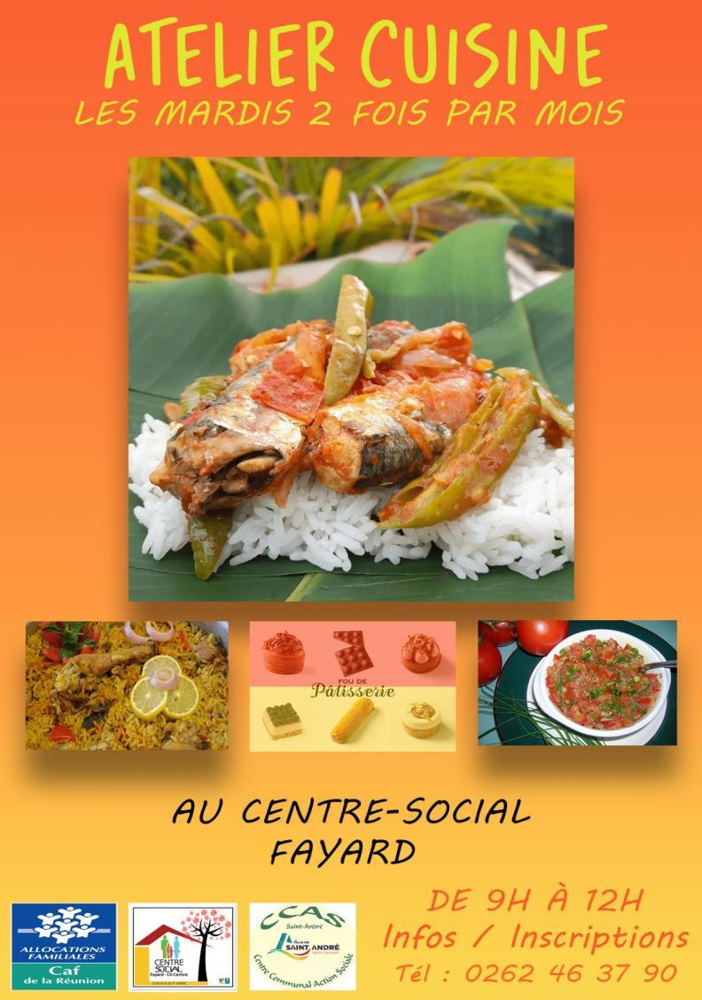
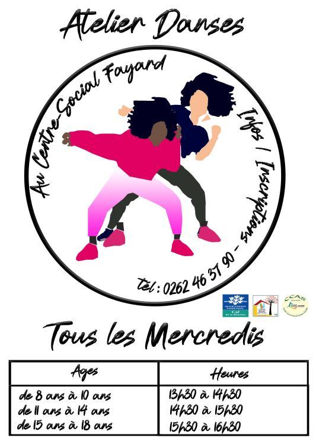
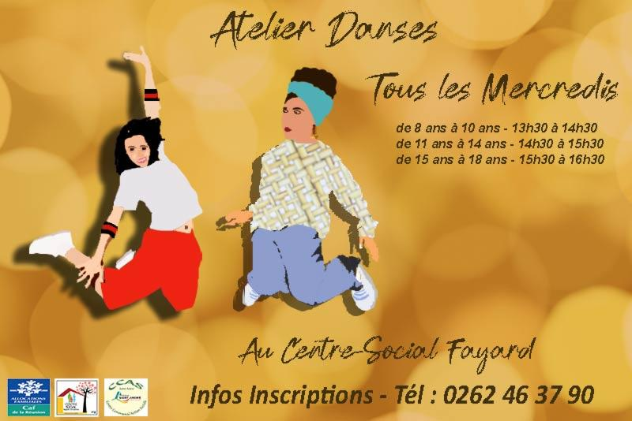

Stage Assistant Numérique
Le Stage à commencé le mardi 16 août 2022 chez le gérant M.
Akhoun Jonas.
Au début, j'ai trouvé un stage au Studio Lumière. Le premier jour Studio Lumière, le patron est occupé donc
l’administration du Studio Lumière à interrompu le stage à cause "ayant rencontré quelques difficultés pour
le
mise en place". Du mercredi 17 août au vendredi 19 août 2022, je cherche encore de stage et le vendredi 19
août
2022 j’ai trouvé de stage à la mairie de St-André par le directeur qui m’a fait diriger vers le CCAS de
Fayard
du centre social.
Lundi 22 août 2022, j’ai commencé mon stage dans l’organisation de l’entreprise CCAS de Fayard du centre
social par le dirigeant M. Dodin Jean-Donald. Le premier tâche de stage j’aide les agences service
civique
pour faire une Affiche sur la cuisine (Flyer) pour leur projet. Le premier réalisation travail en groupe
avec deux
personnes jeune un agence service civique, un jeune mission local et la référente d’accueil qui nous ont
données
des idées pour construire l’affiche
Par rapport aux idées de trois personnes. Le résultat
premier affiche en groupe ci-dessous :

Et qu’en j’ai compris la consigne, je fais seule.
Par rapport aux idées de trois personnes. Le résultat
deuxième affiche tous seul ci-dessous :
Mardi 23 août au 25 août 2022, la tâche suivante de faire
un autre flyer sur la danse, je travail avec une
autre
personne service civique pour l’affiche de danse afro uniquement, chacun à donner des idée et à la fin en a
créer
ces deux affiche ensemble avec quelque correction de faute orthographe et la structure de contenu. L’affiche
à été
corrigée par le responsable, service civique et référent d’accueil.
Le résultat premier affiche ci-dessous :

Le résultat deuxième affiche ci-dessous :

Le but de faire une Flyer pour affiche cuisine aux gens et
aux élèves dans le groupe de fayard car il
organise
entre eux une affiche dans la salle, chacun présente son plat dans l’affiche et comparer chaque affiche est
mieux
pour afficher et attirer les gens, il s’adapte aux clients et à eux de choisir quelle affiche de cuisine à
mettre
lors de l’organisation de cuisine de différent pays et clients. Le but affiché de la danse est d' apprendre
aux
enfants à danser et chacun propose sa danse dans leur pays et organise une compétition de danse. Ils sont
trois
agence service civique à faire l’affiche pour éduquer et soulager les jeunes enfants.
Source : Travail en groupe, internet : Google, réseaux sociaux : Pinterest, Facebook
Résumer Stage de Vendredi 26 août au 05 août 2022 :
Ma tâche à ce jour est de mettre à jour le livre pour annuaire de l’association et sa prendre le temps pour
la
création de contenu, l’imagination, mettre à l’ordre le texte et la photo. Qu’en j'ai fini les travaux, j’ai
mis
sur un USB soit envoyer sur e-mail ou WeTransfer à la référent accueille et le responsable de stage.
Dans le stage Assistant Numérique, j’ai réalisé des maquettes (Flyers pour les ateliers du centre fayard,
annuaire
des associations, etc ...).